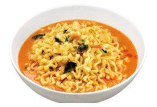
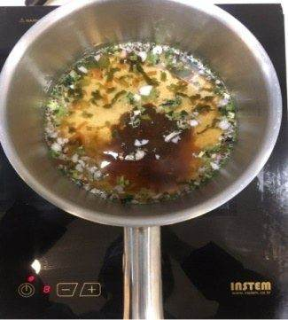
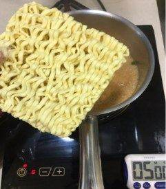
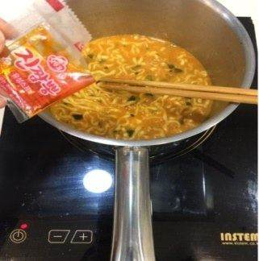

| 메뉴명 | 크림짬뽕라면 |
|---|---|
| 판매가격 | 6,500원 |
| 원재료 | 진짬뽕, 까르보나라 파우더 |
| 사용 부자재 | 라면용기 |
| 메뉴특징 | 얼큰한 짬뽕에 크림을 더해 감칠맛 폭발 중독성 강한 벌툰 특제 라면 메뉴 |
조리방법

1
냄비에 진짬뽕 면사리, 액체스프, 건더기스프, 까르보나라 파우더 1봉을 넣는다.
냄비에 진짬뽕 면사리, 액체스프, 건더기스프, 까르보나라 파우더 1봉을 넣는다.

2
물이 끓으면 면, 까르보나라파우더 1봉을 넣고 타이머 5분을 맞춰 끓여준다.
(※가루 잘 풀어주기)
물이 끓으면 면, 까르보나라파우더 1봉을 넣고 타이머 5분을 맞춰 끓여준다.
(※가루 잘 풀어주기)

3
끓인 후 마지막에 유성스프를 넣고 가볍게 섞어준 뒤, 그릇에 옮겨 담아 단무지와 함께 제공한다.
끓인 후 마지막에 유성스프를 넣고 가볍게 섞어준 뒤, 그릇에 옮겨 담아 단무지와 함께 제공한다.

4
그릇에 옮겨 담고 단무지와 함께 제공한다.
그릇에 옮겨 담고 단무지와 함께 제공한다.
※ 기존 라면조리기:
[일반라면]모드로 조리하기
※ 토핑 추가 ※
▶계란: 타이머 1분 남았을 때 넣기
▶만두: 4개, 물이 끓어서 면을 넣을 때, 함께 넣기
▶치즈: 마지막에 올리기 (치즈를 먼저 꺼내 놓지 않기)
※ 계란, 치즈 추가 시, 넣지 않는 것이 크림맛이 더 좋다고 안내 멘트할 것
※ 제조 후 최대한 빨리 제공할 것.